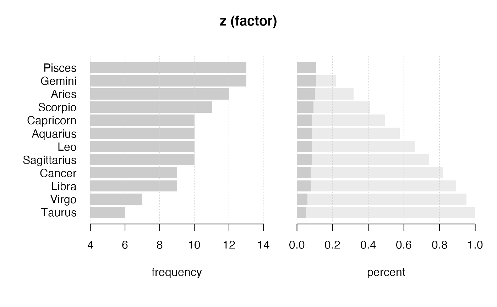

Zodiac.RdCalculate the sign of zodiac of a date.
Zodiac(x, lang = c("engl", "deu"), stringsAsFactors = TRUE)
| x | the date to be transformed. |
|---|---|
| lang | the language of the zodiac names, can be english (default) or german ( |
| stringsAsFactors | logical. If set to |
The really relevant things can sometimes hardly be found. You just discovered such a function... ;-)
The following rule to determine zodiac symbols is implemented:
Dec. 22 - Jan. 19 : Capricorn Jan. 20 - Feb. 17 : Aquarius Feb. 18 - Mar. 19 : Pisces March 20 - April 19 : Aries April 20 - May 19 : Taurus May 20 - June 20 : Gemini June 21 - July 21 : Cancer July 22 - Aug. 22 : Leo Aug 23 - Sept. 21 : Virgo Sept. 22 - Oct. 22 : Libran Oct. 23 - Nov. 21 : Scorpio Nov. 22 - Dec. 21 : Sagittarius
character vector or factor with the zodiac.
Andri Signorell <andri@signorell.net>, based on code from Markus Naepflin
Year and other date functions
Zodiac(as.Date(c("1937-07-28", "1936-06-01", "1966-02-25", "1964-11-17", "1972-04-25")), lang="deu")#> [1] Loewe Zwillinge Fische Skorpion Stier #> 12 Levels: Steinbock Wassermann Fische Widder Stier Zwillinge Krebs ... Schuetze#> ------------------------------------------------------------------------------ #> z (factor) #> #> length n NAs unique levels dupes #> 120 120 0 12 12 y #> 100.0% 0.0% #> #> level freq perc cumfreq cumperc #> 1 Pisces 13 10.8% 13 10.8% #> 2 Gemini 13 10.8% 26 21.7% #> 3 Aries 12 10.0% 38 31.7% #> 4 Scorpio 11 9.2% 49 40.8% #> 5 Capricorn 10 8.3% 59 49.2% #> 6 Aquarius 10 8.3% 69 57.5% #> 7 Leo 10 8.3% 79 65.8% #> 8 Sagittarius 10 8.3% 89 74.2% #> 9 Cancer 9 7.5% 98 81.7% #> 10 Libra 9 7.5% 107 89.2% #> 11 Virgo 7 5.8% 114 95.0% #> 12 Taurus 6 5.0% 120 100.0% #>